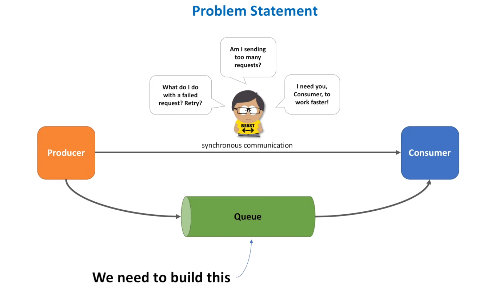
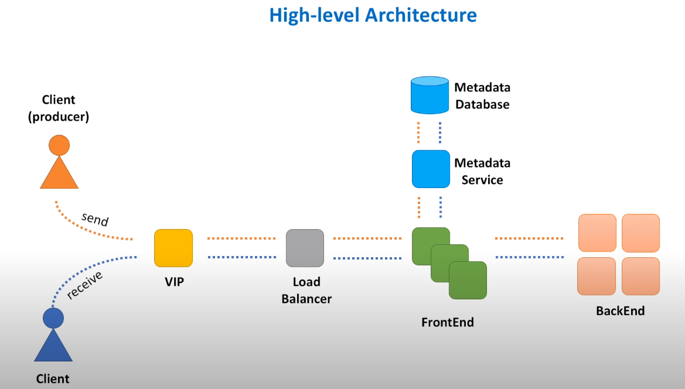
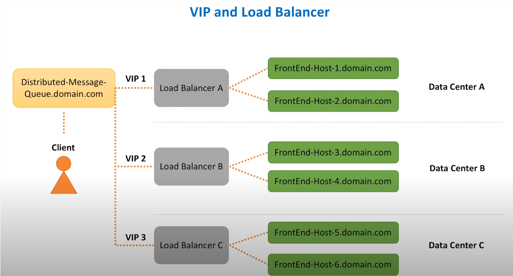
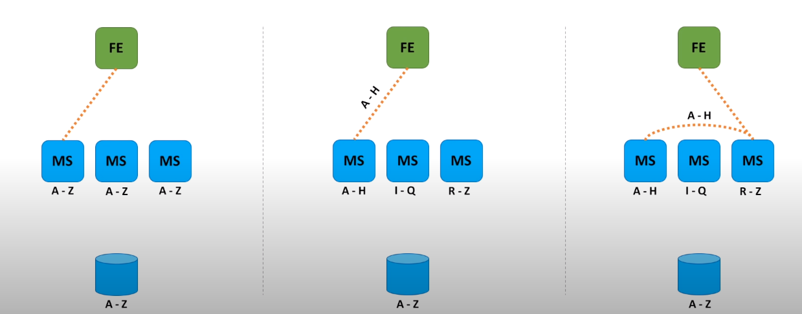
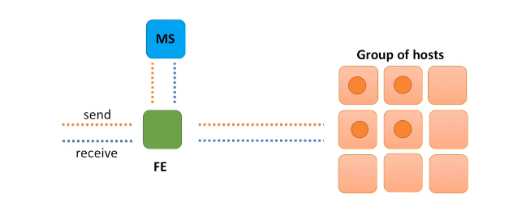
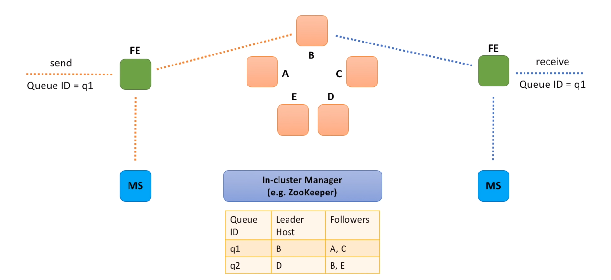
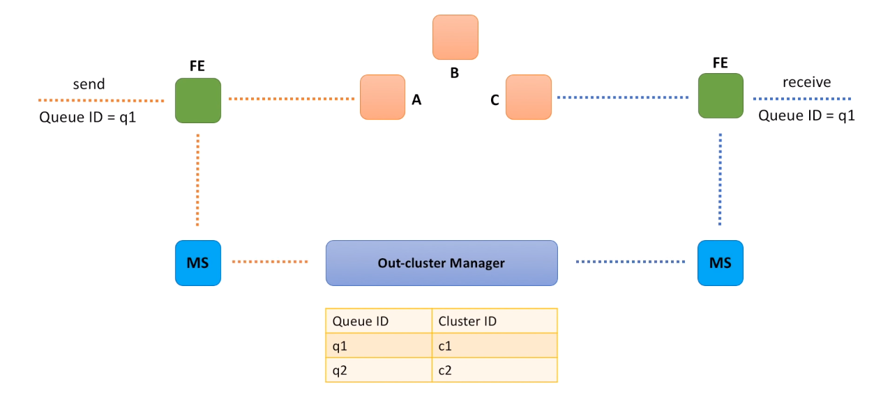
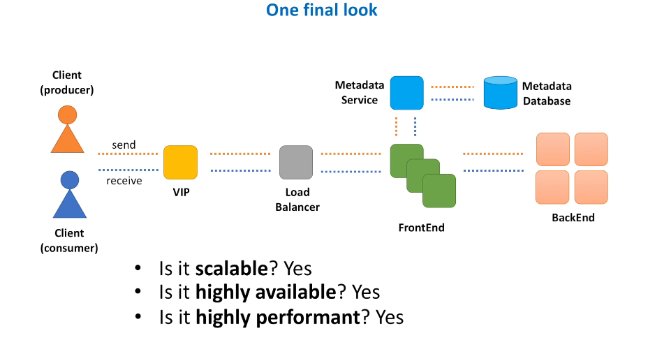

Distributed Message Queue
Synchronous vs Asynchronous

Synchronous Communication
- When producer makes a call to a consumer, waits for a response.
- Easier and faster to implement.
- Harder to deal with consumer service failures. Need to think;
- When and how to properly retry failed requests?
- How not to overwhelm consumer service with too many requests?
- How to deal with a slow consumer service host?
Asynchronous Communication
- Queue : Producer sends data to that component and exactly one consumer gets this data to a short time after.
- It is distributed, because data is stored across several machines.
- Do not confuse queue with topic. In case of a topic, message goes to all subscribers. In case of a queue, message is received by only one consumer.
Functional Requirements
- sendMessage(messageBody)
- receiveMessage()
Non-Functional Requirements
- Scalable (handles load increases, more queues and messages)
- Highly Available (survives hardware/network failures)
- Highly Performant (single digit latency for main operations)
- Durable (once submitted, data is persisted)
High-level Architecture

- VIP : Virtual IP : Refers to the symbolic hostname (myWebService.domain.com) that resolves to a load balancer system.
- Load Balancer : A device that routes client requests across a number of servers.
- FrontEnd Web Service : A component responsible for initial request processing, like validation, authentication.
- Queue Metadata : Queue's name, creation date / time, owner and any other configuration settings will be stored in a DB.
- Metadata service : As a best practice, this metadata DB should be hidden behind some interface, a dedicated web service responsible for handling calls to that DB.
- BackEnd Web Service : Responsible for message persistence and processing.
VIP and Load Balancer

- Load balancing is a big topic and unless interviewer asks to deep dive on it, try to stay on topic to main question of the interview. Internals may not matter, however to ensure that non-functional requirements to the system are met we need to explain how Load Balancer help us achieve high throughput and availability.
- When domain name is hit, request is transferred to one of the VIPs registered in DNS for our domain name.
- VIP is resolved to a load balancer device, which has a knowledge of FrontEnd hosts.
Several Points:
- First, load balancer seems like a single point of failure. What happens if load balancer device goes down?
- Second, load balancers have limits with regards to number of requests they can process and number of bytes they can transfer. What happens when our distributed message queue service becomes so popular that load balancer limits are reached?
- To address high availability concerns, load balancers utilize a concept of primary and secondary nodes. The primary node accepts connections and serves requests while the secondary node monitors the primary. If, the primary node is unable to accept connections, the secondary node takes over.
- As for scalability concerns, a concept of multiple VIPs (sometimes referred as VIP partitioning) can be utilized. In DNS we assign multiple A-records to the same DNS name for the service. As a result, requests are partitioned across several load balancers.
- The "A" stands for "address" and this is the most fundamental type of DNS record: it indicates the IP address of a given domain.
- And by spreading load balancers across several data centers, we improve both availability and performance.
FrontEnd Service
- FrontEnd is a lightweight web service, consisting of stateless machines located across several data centers.
- FrontEnd service is responsible for:
- Request validation : Helps to ensure that all the required parameters are present in the request and values of these parameters honor constraints. For example, in our case we want to make sure queue name comes with every send message request. And message size does not exceed a specified threshold.
- Authentication and authorization : During authentication check we verify that message sender is a registered customer of our distributed queue service. And during authorization check we verify that sender is allowed to publish messages to the queue it claims.
- TLS termination : TLS is a protocol that aims to provide privacy and data integrity. TLS termination refers to the process of decrypting request and passing on an unencrypted request to the backend service. And we want to do TLS termination on FrontEnd hosts because TLS on the load balancer is expensive. Termination is usually handled by not a FrontEnd service itself, but a separate HTTP proxy that runs as a process on the same host.
- Server-side data encryption : Because we want to store messages securely on backend hosts, messages are encrypted as soon as FrontEnd receives them. Messages are stored in encrypted form and FrontEnd decrypts them only when they are sent back to a consumer.
- Caching : Cache stores copies of source data. In FrontEnd cache we will store metadata information about the most actively used queues. As well as user identity information to save on calls to authentication and authorization services.
- Rate limiting (Throttling) : Rate limiting or throttling is the process of limiting the number of requests you can submit to a given operation in a given amount of time. Throttling protects the web service from being overwhelmed with requests. Leaky bucket algorithm is one of the most famous.
- Request dispatching : FrontEnd service makes remote calls to at least two other web services: Metadata service and backend service. FrontEnd service creates HTTP clients for both services and makes sure that calls to these services are properly isolated. It means that when one service let's say Metadata service experiences a slowdown, requests to backend service are not impacted. There are common patterns like bulkhead and circuit breaker that helps to implement resources isolation and make service more resilient in cases when remote calls start to fail.
- Request deduplication : It may occur when a response from a successful send message request failed to reach a client. Lesser an issue for 'at least once' delivery semantics, a bigger issue for 'exactly once' and 'at most once' delivery semantics, when we need to guarantee that message was never processed more than one time. Caching is usually used to store previously seen request ids to avoid deduplication.
- Usage data collection : When we gather real-time information that can be used for audit.
- And even though FrontEnd service has many responsibilities, the rule of thumb is to keep it as simple as possible.
Metadata Service

- Metadata service stores information about queues.
- Every time queue is created, we store information about it in the database. Conceptually, Metadata service is a caching layer between the FrontEnd and a persistent storage.
- It handles many reads and a relatively small number of writes. As we read every time message arrives and write only when new queue is created.
- Even though strongly consistent storage is preferred to avoid potential concurrent updates, it is not strictly required.
- Different approaches of organizing cache clusters:
- The first option is when cache is relatively small and we can store the whole data set on every cluster node. FrontEnd host calls a randomly chosen Metadata service host, because all the cache cluster nodes contain the same information.
- Second approach is to partition data into small chunks, called shards. Because data set is too big and cannot be placed into a memory of a single host. So, we store each such chunk of data on a separate node in a cluster. FrontEnd then knows which shard stores the data and calls the shard directly.
- And the third option is similar to the second one. We also partition data into shards, but FrontEnd does not know on what shard data is stored. So, FrontEnd calls a random Metadata service host and host itself knows where to forward the request to.
- In option one, we can introduce a load balancer between FrontEnd and Metadata service. As all Metadata service hosts are equal and FrontEnd does not care which Metadata host handles the request.
- In option two and three, Metadata hosts represent a consistent hashing ring.
Backend Service

- To understand how backend service architecture may look like, start asking the right questions.
- Where and how messages are stored?
- Is database an option? Yes but not the best one. We're building a distributed message queue, a system that needs to handle high throughput, which means all the throughput will be uploaded to the database. In other words, a problem of building a distributed message queue becomes a problem of developing a database that can handle high throughput. These kinds of databases exist out there. It's reasonable for a junior engineer to recommend to use a database.
- As we may need to store messages for days/weeks, we need more durable storage like local disk. Newly arrived messages may live in memory for a short period of time or until memory on the backend host is fully utilized.
- File system also works.
- How do we replicate data?
- We will send copies of messages to some other hosts, so that data can survive host hardware or software failures.
- How FrontEnd hosts select backend hosts for both storing messages and retrieving them.
- We can leverage Metadata service.
- Message comes to the FrontEnd, FrontEnd consults Metadata service what backend host to send data to. Message is sent to a selected backend host and data is replicated.
- When receive message call comes, FrontEnd talks to Metadata service to identify a backend host that stores the data.
- We will consider two options of how backend hosts relate to each other.
Option A : Leader - Follower Relationship

- Each backend instance is considered a leader for a particular set of queues.
- And by leader we mean that all requests for a particular queue (like send message and receive message requests) go to this leader instance.
- Send message request comes to a FrontEnd instance.
- Message comes to a queue with ID equal to q1.
- FrontEnd service calls Metadata service to identify a leader backend instance for this queue.
- In this particular example, instance B is a leader for q1.
- Message is sent to the leader and the leader is fully responsible for data replication.
- When receive message request comes to a FrontEnd instance, it also makes a request to the Metadata service to identify the leader for the queue.
- Message is then retrieved from the leader instance and leader is responsible for cleaning up the original message and all the replicas.
- We need a component that will help us with leader election and management.
- Let's call it In-cluster manager.
- And as already mentioned, in-cluster manager is responsible for maintaining a mapping between queues, leaders and followers.
- In-cluster manager is a very sophisticated component.
- It has to be reliable, scalable and performant.
Option B : Small cluster of independent hosts

- We have a set of small clusters, each cluster consists of 3-4 machines distributed across several data centers.
- When send message request comes, similar to the previous design option, we also need to call Metadata service to identify which cluster is responsible for storing messages for the q1 queue.
- After that we just make a call to a randomly selected instance in the cluster.
- And instance is responsible for data replication across all nodes in the cluster.
- When receive message request comes and we identified which cluster stores messages for the q1 queue, we once again call a randomly selected host and retrieve the message.
- Selected host is responsible for the message cleanup.
- As you may see, we no longer need a component for leader election, but we still need something that will help us to manage queue to cluster assignments.
- Let's call this component an Out-cluster manager.
- And this component will be responsible for maintaining a mapping between queues and clusters.
In-cluster Manager vs Out-cluster Manager
- In-cluster manager manages queue assignment within the cluster, out-cluster manager manages queue assignment across clusters.
- In-cluster manager needs to know about each and every instance in the cluster. Out-cluster manager may not know about each particular instance, but it needs to know about each cluster.
- In-cluster manager listens to heartbeats from instances. Out-cluster manager monitors health of each independent cluster.
- In-cluster manager deals with host failures and needs to adjust to the fact that instances may die and new instances may be added to the cluster, out-cluster manager is responsible for tracking each cluster utilization and deal with overheated clusters. Meaning that new queues may no longer be assigned to clusters that reached their capacity limits.
- In-cluster manager splits queue into parts (partitions) and each partition gets a leader server. Out-cluster manager may split queue across several clusters. So that messages for the same queue are equally distributed between several clusters.
What else is important?
Queue creation and deletion
- Queue can be auto-created, for example when the first message for the queue hits FrontEnd service, or we can define API for queue creation.
- API is a better option, as we will have more control over queue configuration parameters.
- Delete queue operation is a bit controversial, as it may cause a lot of harm and must be executed with caution.
- For this reason, you may find examples of well-known distributed queues that do not expose deleteQueue API via public REST endpoint.
- Instead, this operation may be exposed through a command line utility, so that only experienced admin users may call it.
Message deletion
- There are several options at our disposal.
- One option is not to delete a message right after it was consumed. In this case consumers have to be responsible for what they already consumed. And it is not as easy as it sounds. As we need to maintain some kind of an order for messages in the queue and keep track of the offset, which is the position of a message within a queue. Messages can then be deleted several days later, by a job. This idea is used by Apache Kafka.
- The second option, is to do something similar to what Amazon SQS is doing. Messages are also not deleted immediately, but marked as invisible (known as visibility timeout), so that other consumers may not get already retrieved message. Consumer that retrieved the message, needs to then call delete message API to delete the message from a backend host. And if the message was not explicitly deleted by a consumer, message becomes visible and may be delivered and processed twice. When a consumer consumes a message, a lease is granted for duration of visibility timeout. When consumer calls delete API, consumer must still hold the lease or else delete API will fail.
Message replication
- Messages need to be replicated to achieve high durability. Otherwise, if we only have one copy of data, it may be lost due to unexpected hardware failure.
- Messages can be replicated synchronously or asynchronously.
- Synchronously means that when backend host receives new message, it waits until data is replicated to other hosts. And only if replication is fully completed, successful response is returned to a producer.
- Asynchronous replication means that response is returned back to a producer as soon as message is stored on a single backend host. In this case we will need to store data in log file incase of system crash. Message is later replicated to other hosts.
- Both options have pros and cons.
- Synchronous replication provides higher durability, but with a cost of higher latency for send message operation.
- Asynchronous replication is more performant, but does not guarantee that message will survive backend host failure.
Message delivery semantics
- There are three main message delivery guarantees.
- At most once, when messages may be lost but are never redelivered.
- At least once, when messages are never lost but may be redelivered.
- And exactly once, when each message is delivered once and only once.
- Will anyone ever want other than exactly once delivery? The simple answer is that it is hard to achieve exactly once delivery in practice.
- In a distributed message queue system there are many potential points of failure. Producer may fail to deliver or deliver multiple times, data replication may fail, consumers may fail to retrieve or process the message.
- All this adds complexity and leads to the fact that most distributed queue solutions today support at-least-once delivery, as it provides a good balance between durability, availability and performance.
Push vs Pull
- With a pull model, consumer constantly sends retrieve message requests and when new message is available in the queue, it is sent back to a consumer.
- With a push model, consumer is not constantly bombarding FrontEnd service with receive calls. Instead, consumer is notified as soon as new message arrives to the queue.
- And as always, there are pros and cons. From a distributed message queue perspective pull is easier to implement than a push. But from a consumer perspective, we need to do more work if we pull.
FIFO
- FIFO stands for first-in, first-out, meaning that the oldest message in a queue is always processed first.
- But in distributed systems, it is hard to maintain a strict order. Message A may be produced prior to message B, but it is hard to guarantee that message A will be stored and consumed prior to message B.
- For these reasons many distributed queue solutions out there either does not guarantee a strict order. Or have limitations around throughput, as queue cannot be fast while it's doing many additional validations and coordination to guarantee a strict order.
Security
- We need to make sure that messages are securely transferred to and from a queue.
- Encryption using SSL over HTTPS helps to protect messages in transit.
- And we also may encrypt messages while storing them on backend hosts.
Monitoring
- Monitoring is critical for every system.
- With regards to distributed message queue, we need to monitor components (or microservices) that we built: fronted, metadata and backend services.
- As well as provide visibility into customer's experience.
- In other words, we need to monitor health of our distributed queue system and give customers ability to track state of their queues.
- Each service we built has to emit metrics and write log data.
- As operators of these services we need to create dashboards for each microservice and setup alerts.
- And customers of our queue have to be able to create dashboards and set up alerts as well.
- For this purpose, integration with monitoring system is required.
- Many times this topic is omitted by interviwers but it's very important.
Final Look

- Is our system scalable?
- Yes. As every component is scalable.
- When load increases, we just add more load balancers, more FrontEnd hosts, more Metadata service cache shards, more backend clusters and hosts.
- Is our system highly available?
- Yes. As there is no a single point of failure, each component is deployed across several data centers. Individual hosts may die, network partitions may happen, but with this redundancy in place our system will continue to operate.
- Is our system highly performant?
- It's actually very well depends on the implementation, hardware and network setup.
- Each individual microservice needs to be fast.
- And we need to run our software in high-performance data centers.
- Is our system durable?
- Sure. We replicate data while storing and ensure messages are not lost during the transfer from a producer and to a consumer.